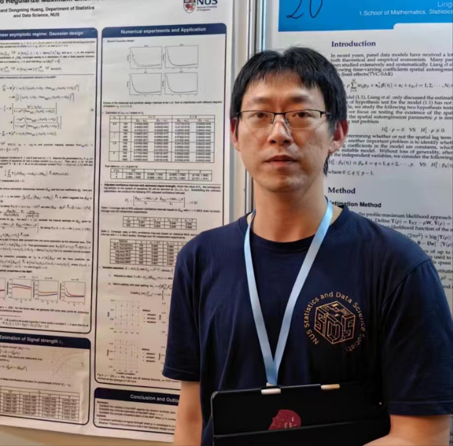

Weihao Li,
Department of Statistics and Data Science
Tsinghua University

Biography
I’m now a postdoctoral fellow at Tsinghua University (THU) advised by Prof. Jun S. Liu I received my Ph.D. degree in Statistics from Department of Statistics and Data Science, National University of Singapore (NUS), under the supervision of Prof. Dongming Huang. Previously, I received my Master degree in the Department of Statistics from The University of Chicago in 2021 advised by Prof. Wei-Biao Wu. I received my B.S. in the Department of Statistics from The Chinese University of Hong Kong (CUHK) in 2019.
Contact
Email: liweihao [at] tsinghua.edu.cn
Research Interest
High dimension Statistics
Diffusion model and deep learning
Statistical machine learning
Selective inference